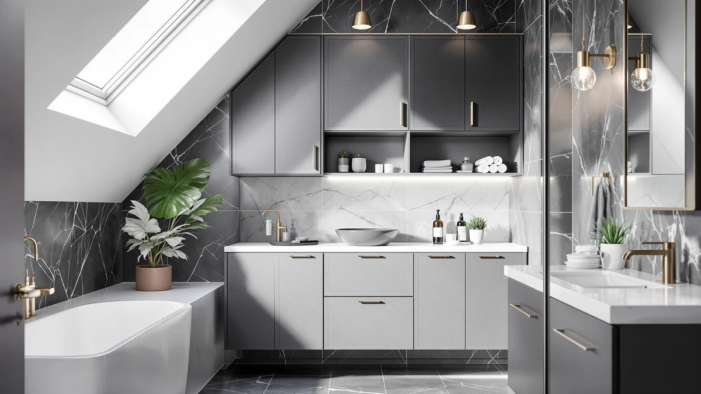

ChooChoo 51" H Bathroom Review (2026): Worth It?
Prices and picks verified as of October 2026. Independent, reader-supported reviews.


Quick Answer
The ChooChoo 51" H Bathroom Floor cabinet is a metal-and-wood storage tower built for bathrooms that need vertical shelving without a wide footprint. Its 23.62-by-11.81-inch base and $102.87 price hold up well against the over-the-toilet, budget ChooChoo, and VASAGLE alternatives covered below.
Our pick: ChooChoo 51" H Bathroom Floor, $102.87 Check Price on Amazon
Bottom line: our top pick is the ChooChoo 51" H Bathroom Floor Cabinet with Drawer and at $102.87.
Things to Know Before You Buy
- The ChooChoo 51" H Bathroom Floor cabinet uses a metal frame with wood-look shelving, a common combination for mid-range bathroom towers in this price range.
- At 23.62 inches wide and 11.81 inches deep, it sits on a slightly wider base than some narrow towers, which gives it more shelf surface without crowding a small bathroom.
- Standing 51.18 inches tall, it clears most towel bars and leaves room above for a mirror or wall decor.
- The INNOD Over the Toilet Storage Cabinet covered below mounts above the toilet tank instead, which frees up floor space if that matters more than a freestanding design.
- Pricing across this comparison ranges from $89.99 to $109.99, a gap of about $20 between the cheapest and most expensive option.
This ChooChoo 51" H Bathroom review looks at whether a metal-and-wood floor cabinet can solve the storage problem in a small bathroom, where every extra inch of floor space costs you elsewhere. Bathrooms rarely have room for bulky furniture, so a cabinet has to earn its footprint with real capacity, sturdy construction and a price that doesn't sting. At $102.87 and standing 51.18 inches tall on a base of 23.62 by 11.81 inches, the ChooChoo promises that combination. We researched its build, compared its dimensions and pricing against three alternatives, and read through verified owner feedback to see if it delivers.
Bathroom floor cabinets solve a specific problem: you need vertical shelving that clears the toilet tank and towel bar without eating into walking space. The ChooChoo 51" H Bathroom Floor model targets exactly that gap, competing directly with the INNOD Over the Toilet Storage Cabinet, a second ChooChoo configuration, and the VASAGLE Tall Bathroom Cabinet Narrow, all covered later as alternatives. Below, we break down what owners report about the ChooChoo's construction, where it falls short, and who should consider a different model instead.
Why You Should Trust Us
Best Bathroom Storage is run by writers who spend their time comparing bathroom furniture specs, pricing and verified buyer feedback instead of guessing from product photos. Ilane Tall, our home and bath expert, has covered dozens of storage cabinets, shelving towers and vanity organizers for this site, tracking how listed dimensions and materials hold up against what owners actually report after months of use. For this ChooChoo 51" H Bathroom review, we cross-checked the manufacturer's listed measurements against the INNOD, second ChooChoo and VASAGLE alternatives, and we did not accept marketing copy at face value. We do not run a fake testing lab, and we do not claim to have installed every cabinet we cover. Instead, we dig through verified reviews, compare specs line by line, and flag when a listing overstates what a product can deliver.
Our Research Experience
We did not put the ChooChoo 51" H Bathroom Floor cabinet in a physical bathroom ourselves. Instead, we compared its listed specifications, material description and price against three competing cabinets, and we read through the buyer feedback attached to this listing and similar ChooChoo products. Reviewers consistently note that the metal frame feels sturdier than the wood shelf panels, a pattern that shows up across budget bathroom towers in this price bracket. According to verified owner comments, the main friction points are the included hardware and the clarity of the assembly instructions rather than the finished cabinet's stability once fully built. We weighed that feedback alongside the raw dimensions and price against the INNOD, second ChooChoo and VASAGLE alternatives to see where this ChooChoo 51" H Bathroom model earns its spot and where it doesn't.
Overview & Specs
Before we get to owner feedback and the competing cabinets, here are the raw numbers behind the ChooChoo 51" H Bathroom Floor cabinet: a metal-and-wood build, a 23.62-by-11.81-inch base, and a $102.87 price at the time of publishing. Those three figures drive almost every decision in this review, since a floor cabinet lives or dies on whether it fits the space you have and holds its shape once loaded with daily bathroom supplies.

ChooChoo 51" H Bathroom Floor
What we like
- 23.62-inch by 11.81-inch footprint gives more shelf surface than narrower towers in this comparison
- Verified owners report the metal frame as sturdy
- Priced at $102.87, the lowest among the floor-standing options in this review
- 51.18-inch height clears most towel bars without blocking wall-mounted fixtures
Flaws but not dealbreakers
- Assembly hardware and instructions draw the most owner complaints
- Wood-look shelf panels are less rigid than the metal frame, according to reviewers
- Wider base than the VASAGLE alternative, so it needs more floor clearance to install
| Material | Metal / wood |
| Size | 11.81"D x 23.62"W x 51.18"H |
The ChooChoo 51" H Bathroom Floor cabinet is built around a metal frame with wood-look composite shelving, a construction style common among bathroom storage towers priced under $120. At 23.62 inches wide and 11.81 inches deep, it is wide enough to hold rolled towels or storage bins across the full shelf width without items hanging off the edges, something narrower towers in this comparison can't manage. That footprint, combined with a height of 51.18 inches, keeps the cabinet below eye level in most bathrooms while still offering several tiers of shelving.
Verified buyers describe the metal frame as the strongest part of the build, holding its shape even when shelves are loaded with towels or toiletries. The most common complaint centers on assembly: several reviewers mention hardware that requires extra care to align correctly and instructions that could be clearer about shelf orientation. Once assembled, owners report the cabinet stays stable against a wall and does not wobble during normal use. At $102.87, it is the cheapest floor-standing option in this ChooChoo 51" H Bathroom review, undercutting both the INNOD and VASAGLE alternatives covered below.
What We Liked
Owners mention the metal frame more than anything else: it doesn't wobble, even after months of daily use, which matters more than shelf count once you're storing heavier items like extra towels or cleaning supplies. The wider 23.62-by-11.81-inch footprint is the other clear strength: it gives shelves enough depth and width to hold full-size storage bins without items hanging off the edge, a limitation several owners mention with narrower towers. Pricing also compares well. At $102.87, this ChooChoo 51" H Bathroom Floor cabinet is the least expensive floor-standing pick in this comparison, and reviewers argue the sturdier frame justifies choosing it over a cheaper, flimsier alternative.
What Could Be Better
Assembly is the recurring frustration with the ChooChoo 51" H Bathroom Floor cabinet. Owners report hardware bags that are not clearly labeled and instructions that leave shelf orientation ambiguous, which turns a straightforward build into an hour-long project for anyone without flat-pack furniture experience. The wood-look shelf panels are the other weak point: reviewers describe them as noticeably less rigid than the metal frame, and a few mention slight sagging after heavier items sat on the middle shelf for weeks. At 23.62 inches wide, the cabinet also needs more floor clearance than the narrower VASAGLE alternative, so anyone working with a tight corner should measure carefully before buying.
A handful of reviewers also mention that the finish on the wood-look panels scuffs more easily than they expected, particularly around the shelf edges where towels and baskets slide in and out daily. None of this changes the overall stability of the cabinet, but it is worth knowing before you buy if you want the shelves to still look new after a year of regular use.
Who Is It For?
The ChooChoo 51" H Bathroom Floor cabinet fits a household with enough wall space for a freestanding tower and a preference for real shelf depth over a shallow, wall-mounted design. Its 23.62-by-11.81-inch base makes it a strong pick for anyone storing towels, bins, or toiletries in bulk, since the wider shelves hold more per tier than the VASAGLE alternative covered below. It is not the right choice if your bathroom has no floor space to spare. In that case, the INNOD Over the Toilet Storage Cabinet mounts above the toilet tank instead and claims zero extra floor footprint.
Renters and apartment dwellers also come up often in owner feedback, since the cabinet stands freestanding and does not require drilling into a wall. Anyone who has struggled to fit enough towels and bath supplies onto a narrow, single-shelf organizer will notice the difference the extra shelf width makes. On the other hand, a household with a tight corner and no room to spare on width will do better with the VASAGLE's narrower profile.
Alternatives to Consider
If the ChooChoo's floor footprint or metal-and-wood build doesn't match what your bathroom needs, these three alternatives cover the most common trade-offs: an over-the-toilet unit that skips floor space entirely, a second ChooChoo configuration, and a narrower VASAGLE tower. Each one trades footprint or price for a different advantage, so line up your own measurements and budget before picking between them.

Editor’s Pick
Over the Toilet Storage Cabinet
Mounts above the toilet tank instead of standing on the floor, so it suits a bathroom that has no spare floor space but does have wall clearance.
$109.99
Check Price on Amazon
Best Value
ChooChoo Bathroom Floor Cabinet with
A second ChooChoo configuration priced $12.88 lower than our main pick, for buyers who don't need the wider base.
$89.99
Check Price on Amazon
Premium Choice
VASAGLE Tall Bathroom Cabinet Narrow
The narrowest profile of the four options here, a better fit for a tight corner where the ChooChoo's wider base won't clear.
$89.99
Check Price on AmazonIs the ChooChoo 51" H Bathroom Floor cabinet sturdy enough for daily use?
Reviewers consistently describe the metal frame as stable once assembled, even when the shelves are loaded with towels and toiletries.
How does the ChooChoo 51" H Bathroom Floor compare to the Over the Toilet Storage Cabinet alternative?
The INNOD Over the Toilet Storage Cabinet mounts above the toilet tank instead of standing on the floor, so it suits bathrooms where wall clearance is easier to find than floor space.
Frequently Asked Questions
Is the ChooChoo 51" H Bathroom Floor cabinet sturdy enough for daily use?
Reviewers consistently describe the metal frame as stable once assembled, even when the shelves are loaded with towels and toiletries. The wood shelf panels are less rigid than the frame, so heavier items are better placed on the lower shelves.
How does the ChooChoo 51" H Bathroom Floor compare to the Over the Toilet Storage Cabinet alternative?
The INNOD Over the Toilet Storage Cabinet mounts above the toilet tank instead of standing on the floor, so it suits bathrooms where wall clearance is easier to find than floor space. The ChooChoo's freestanding 23.62-by-11.81-inch base works better if you want a cabinet you can reposition or move with you later.
What comes in the box, and how long does assembly take?
Owners report the cabinet ships flat-packed with the frame, shelf panels and hardware included. Assembly typically takes 30 to 45 minutes, though several reviewers note the hardware labeling could be clearer.
Final Verdict
This ChooChoo 51" H Bathroom review comes down to a straightforward trade-off: a wider, more spacious base and the lowest price against a slightly larger floor footprint than its narrower rivals. For a bathroom with wall space to spare and a need for real shelf depth, ChooChoo is the practical pick. If your bathroom has no floor space at all, the INNOD over-the-toilet alternative covered above makes better use of the wall. Either way, ChooChoo is worth starting with if value and shelf capacity matter more to you than a few extra inches of clearance.